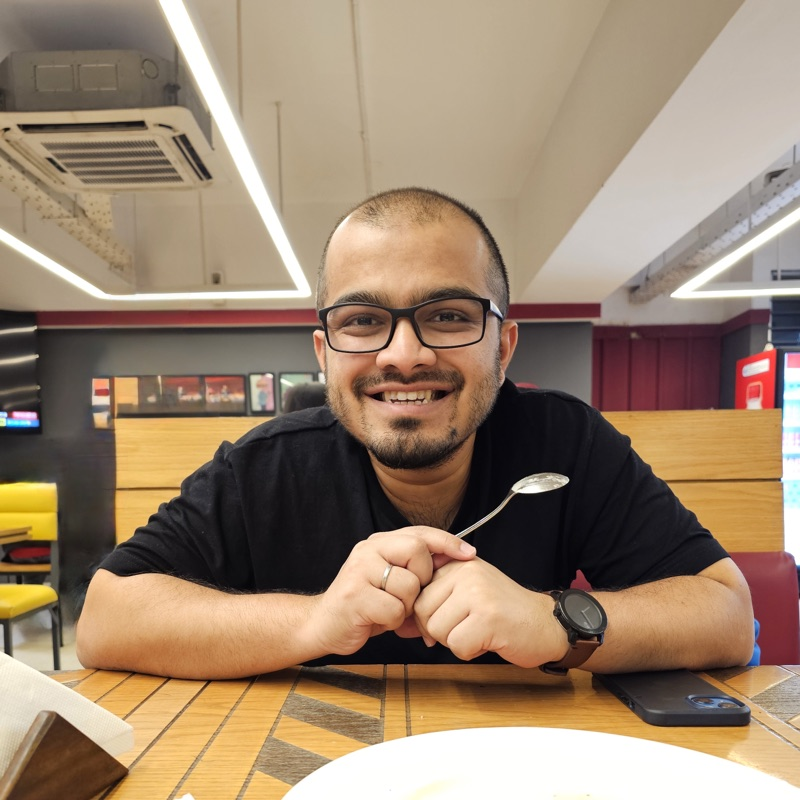

Multimodal Multiple Instance Learning for Fibroepithelial Tumor Diagnosis in Breast Ultrasound
Farhan Fuad Abir, Mahad Ali, M Shifat Hossain, Logan R Holt, Victoria Chamberlain, Tyler Shern, Tolga Ozmen, Laura J. Brattain

I work on trustworthy machine learning, models that stay reliable when data is scarce, imbalanced, or expensive to label. I like work that is rigorous and legible, and I like building things end to end.
About
Most machine learning in the real world never gets the big, clean, balanced dataset it was promised. I work on the methods that make models hold up anyway: combining different kinds of data, making predictions you can actually inspect, and generating realistic data to fill the gaps. I test these ideas on medical ultrasound, where a wrong answer is expensive, though the methods themselves are not tied to any one field.
I got here by way of Bangladesh, Qatar, and Orlando. I started in wearable and biosignal ML, doing heart-rate anomaly detection and blood-pressure estimation from PPG and ECG. Then came a master's on making reinforcement-learning agents interpretable, and now a PhD at UCF with Dr. Laura Brattain. Somewhere in there I decided I care more about models that are honest and legible than models that top a leaderboard.
Now
Finishing my PhD at UCF, with recent first-author papers at a MICCAI 2026 workshop, ISBI 2026, BSN 2025, and a NeurIPS 2025 workshop. I am looking for a Summer 2027 research internship in trustworthy or data-efficient ML.
Updates
Selected publications
Farhan Fuad Abir, Mahad Ali, M Shifat Hossain, Logan R Holt, Victoria Chamberlain, Tyler Shern, Tolga Ozmen, Laura J. Brattain
Mahad Ali, Farhan Fuad Abir, Trevor Overton, Mohsen Rakhshan, Luigi E. Perotti, Laura J. Brattain
Farhan Fuad Abir, Sanjeda Sara Jennifer, Niloofar Yousefi, Laura J. Brattain
Farhan Fuad Abir, Abigail Elliott Daly, Kyle Anderman, Tolga Ozmen, Laura J. Brattain
Farhan Fuad Abir, Muhammad E. H. Chowdhury, Malisha Islam Tapotee, Adam Mushtak, Amith Khandakar, Sakib Mahmud, Anwarul Hasan
Farhan Fuad Abir, Khalid Alyafei, Muhammad E. H. Chowdhury, Amith Khandakar, et al.
Open-source and tinkering
A dataglove that reads ASL letters and words from flex and motion sensors. It started as my undergrad capstone and turned into a Scientific Reports paper.
My entry for the Sussex-Huawei Locomotion Challenge 2020, which recognizes how someone is travelling from wearable sensor streams. It placed 6th.
A multi-terminal AVR buzzer system for live quiz competitions, built because someone had to settle who pressed first.
Elsewhere and contact
Email is the best way to reach me, whether it is about an internship, a collaboration, or something on this page you want to talk about.